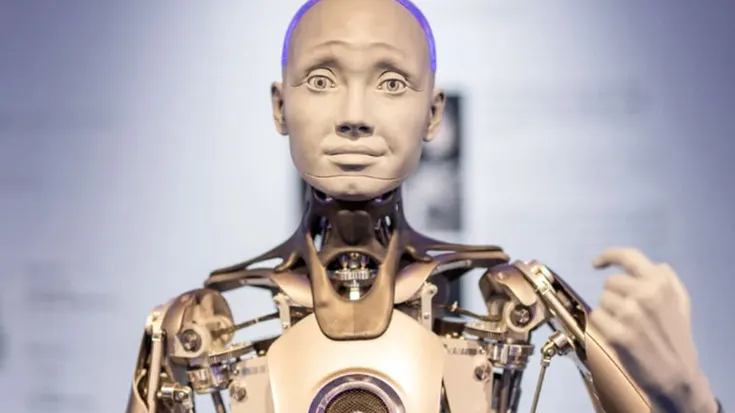
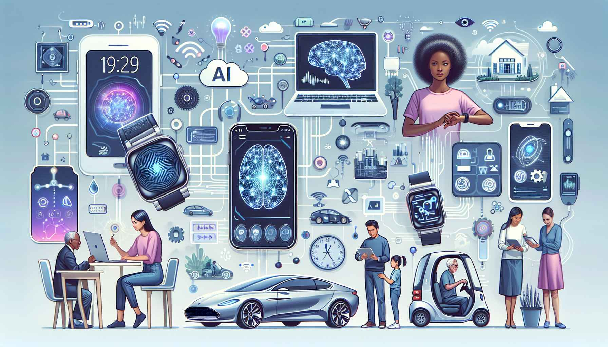

Inteligências artificiais como o AlphaGo da DeepMind conseguiram vencer campeões mundiais no jogo de Go, considerado mais complexo que o xadrez em termos de estratégias.
Algumas IAs, como DALL·E e MuseNet, conseguem criar imagens e composições musicais originais a partir de instruções de texto, mostrando criatividade artificial.
O robô humanoide Sophia, da Hanson Robotics, é capaz de reconhecer expressões faciais e interagir de forma social, tornando a IA mais próxima da comunicação humana.

Ferramentas como o AlphaFold conseguem prever a estrutura de proteínas, acelerando pesquisas médicas e o desenvolvimento de novos medicamentos.
Algumas IAs usam aprendizado de máquina (machine learning) e aprendizado profundo (deep learning) para evoluir suas habilidades analisando grandes quantidades de dados, sem precisar de programação manual para cada tarefa.
Mesmo sem perceber, muitas pessoas usam IA diariamente: assistentes virtuais (Siri, Alexa), recomendações em streaming (Netflix, Spotify), tradução automática (Google Translate) e filtros de e-mail.
